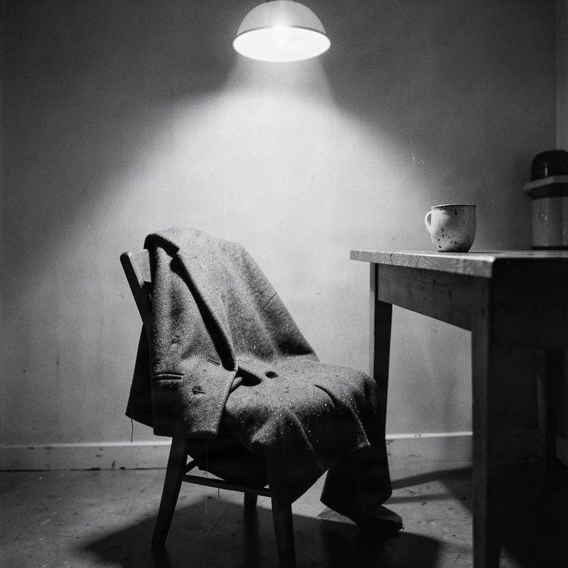

Track 01
Your Old Key Fits
Unerwartete Heimkehr im Regen: Jacke auf dem Küchenstuhl, alte Notiz am Telefon und die offene Tür ohne Fragen.
[Verse 1]
You left your coat on the kitchen chair
Dust on the cuffs, rain in your hair
I found your note by the telephone
Three crooked words: “I’m coming home”
[Pre-Chorus]
The clock keeps chewing through the night
I hold that paper to the light
[Chorus]
Come on back through the front door
I won’t ask what you ran for
There’s a place at the table still
And your old key fits if you will
[Verse 2]
The sink drips slow in the quiet room
Your chipped blue cup still holds its stain
I kept the porch bulb burning late
Though every passing car was just the rain